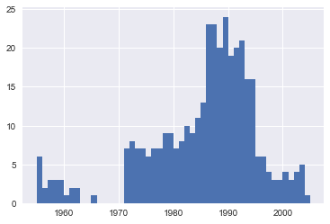
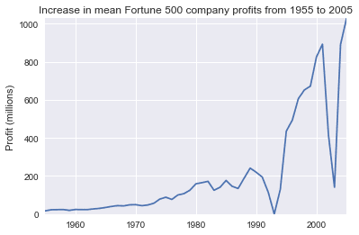
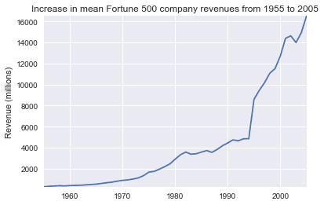
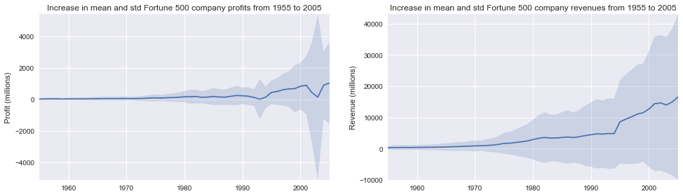

Пример анализа данных в блокноте Jupyter
Итак, допустим, вы аналитик данных, и вам было поручено выяснить, как исторически менялась прибыль крупнейших компаний в США. У нас для этого будет набор данных о компаниях из списка Fortune 500, охватывающих более 50 лет с момента первой публикации списка в 1955 году, собранных из открытого архива Fortune. Для анализа мы создали CSV файл данных, который вы можете скачать отсюда.
Как мы покажем, ноутбуки Jupyter идеально подходят для этого исследования.
Обычно начинают с ячейки кода, специально предназначенной для импорта и настройки, поэтому, если вы решите добавить или изменить что-либо, вы можете просто отредактировать и повторно запустить ячейку, не вызывая побочных эффектов.
import pandas as pd
import matplotlib.pyplot as plt
import seaborn as sns
sns.set_theme(style="darkgrid")
Здесь мы импортируем pandas для работы с нашими данными, Matplotlib для построения графиков и Seaborn для улучшения внешнего вида наших графиков. Обычно также импортируется NumPy, но в нашем случае, мы используем его через pandas, и нам не нужно это делать явно. Последняя строка не является командой Python, она является нечто, называемое строковой магией, для инструктирования Jupyter захватывать графики Matplotlib и отображать их в выходных данных ячейки; это одна из ряда расширенных функций, которые выходят за рамки данной статьи.
Давайте продолжим и загрузим наши данные.
df = pd.read_csv('fortune500.csv')
Целесообразно делать это в отдельной ячейке на случай, если нам понадобится перезагрузить ее в любой момент.
Теперь, когда мы начали создавать проект, лучше регулярно сохраняться. Нажатие Ctrl + S сохранит вашу записную книжку, вызвав команду «Save and Checkpoint», но что это за checkpoint (контрольная точка)?
Каждый раз, когда вы создаете новую записную книжку, создается файл контрольной точки, а также файл вашей записной книжки; он будет расположен в скрытом подкаталоге вашего места сохранения с именем .ipynb_checkpoints, и также является файлом .ipynb. По умолчанию Jupyter каждые 120 секунд автоматически сохраняет ваш блокнот в этот файл контрольных точек, не изменяя основной файл блокнота. Когда вы сохраняете и сохраняете контрольную точку, файлы записной книжки и контрольной точки обновляются. Следовательно, контрольная точка позволяет вам восстановить несохраненную работу в случае непредвиденной проблемы. Вы можете вернуться к контрольной точке из меню через «File> Revert to Checkpoint».
Наш блокнот благополучно сохранен, и мы загрузили наш набор данных переменную df в наиболее часто используемую структуру данных pandas, которая называется DataFrame и в основном выглядит как таблица. Давай те посмотрим как выглядят наши данные?
df.head()
|
year |
rank |
company |
revenue (in millions) |
profit (in millions) | |
|
0 |
1955 |
1 |
General Motors |
9823.5 |
806 |
|
1 |
1955 |
2 |
Exxon Mobil |
5661.4 |
584.8 |
|
2 |
1955 |
3 |
U.S. Steel |
3250.4 |
195.4 |
|
3 |
1955 |
4 |
General Electric |
2959.1 |
212.6 |
|
4 |
1955 |
5 |
Esmark |
2510.8 |
19.1 |
df.tail()
|
year |
rank |
company |
revenue (in millions) |
profit (in millions) | |
|
25495 |
2005 |
496 |
Wm. Wrigley Jr. |
3648.6 |
493 |
|
25496 |
2005 |
497 |
Peabody Energy |
3631.6 |
175.4 |
|
25497 |
2005 |
498 |
Wendy’s International |
3630.4 |
57.8 |
|
25498 |
2005 |
499 |
Kindred Healthcare |
3616.6 |
70.6 |
|
25499 |
2005 |
500 |
Cincinnati Financial |
3614.0 |
584 |
У нас есть столбцы, которые нам нужны, и каждая строка соответствует одной компании за один год.
Давайте просто переименуем эти столбцы, чтобы мы могли обратиться к ним позже.
df.columns = ['year', 'rank', 'company', 'revenue', 'profit']
Далее нам нужно изучить наш набор данных. Являются ли они завершенными? Распознало ли pandas их, как ожидалось? Отсутствуют ли в них какие-либо значения?
len(df)
25500
У нас есть 500 строк за каждый год с 1955 по 2005 год включительно.
Давайте проверим, был ли наш набор данных импортирован, как мы ожидали. Простая проверка состоит в том, чтобы увидеть, были ли типы данных (или dtypes) правильно интерпретированы.
df.dtypes
year int64
rank int64
company object
revenue float64
profit object
dtype: object
О, похоже, что с колонкой profit что-то не так – мы ожидаем, что это будет float64, как колонка revenue. Это указывает на то, что она, вероятно, содержит нецелые значения, так что давайте посмотрим.
non_numberic_profits = df.profit.str.contains('[^0-9.-]')
df.loc[non_numberic_profits].head()
|
year |
rank |
company |
revenue |
profit | |
|
228 |
1955 |
229 |
Norton |
135.0 |
N.A. |
|
290 |
1955 |
291 |
Schlitz Brewing |
100.0 |
N.A. |
|
294 |
1955 |
295 |
Pacific Vegetable Oil |
97.9 |
N.A. |
|
296 |
1955 |
297 |
Liebmann Breweries |
96.0 |
N.A. |
|
352 |
1955 |
353 |
Minneapolis-Moline |
77.4 |
N.A. |
Как мы и подозревали! Некоторые значения являются строками, которые использовались для указания отсутствующих данных. Есть ли какие-то другие значения, которые закрались?
set(df.profit[non_numberic_profits])
{'N.A.'}
Получается, что других значений нет. Это облегчает интерпретацию, но что нам делать? Это зависит от того, сколько значений пропущено.
len(df.profit[non_numberic_profits])
369
Это небольшая часть нашего набора данных, хотя и не совсем несущественная, поскольку все еще составляет около 1,5%. Если строки, содержащие N.A., примерно одинаково распределены по годам, самым простым решением было бы просто удалить их. Итак, давайте кратко рассмотрим их распределение.
bin_sizes, _, _ = plt.hist(df.year[non_numberic_profits], bins=range(1955, 2006))

На первый взгляд, мы видим, что самые недопустимые значения за один год составляют менее 25, а поскольку существует 500 точек данных в год, удаление этих значений будет составлять менее 4% данных для худших лет. Действительно, кроме всплеска около 90-х годов, большинство лет имеют менее половины недостающих значений пика. Для наших целей допустим, что это приемлемо, и мы просто удалим эти строки.
df = df.loc[~non_numberic_profits]
df.profit = df.profit.apply(pd.to_numeric)
Мы должны проверить, что у нас получилось.
len(df)
25131
df.dtypes
year int64
rank int64
company object
revenue float64
profit float64
dtype: object
Супер! Мы завершили настройку набора данных.
Если бы вы собирались представить свою записную книжку в виде отчета, вы могли бы избавиться от созданных нами исследовательских ячеек, которые включены здесь в качестве демонстрации процесса работы с записными книжками, и объединить соответствующие ячейки (см. Раздел «Дополнительные функции» ниже для подробностей об этом) для создания единой ячейки настройки набора данных. Это будет означать, что если мы когда-нибудь испортим наш набор данных в другом месте, мы сможем просто повторно запустить ячейку настройки, чтобы восстановить ее.
Далее мы можем перейти к решению данного вопроса, построив график средней прибыли за год. Мы можем также рассчитать доход, поэтому сначала мы определим некоторые переменные и метод, чтобы уменьшить наш код.
group_by_year = df.loc[:, ['year', 'revenue', 'profit']].groupby('year')
avgs = group_by_year.mean()
x = avgs.index
y1 = avgs.profit
def plot(x, y, ax, title, y_label):
ax.set_title(title)
ax.set_ylabel(y_label)
ax.plot(x, y)
ax.margins(x=0, y=0)
Теперь график!
fig, ax = plt.subplots()
plot(x, y1, ax, 'Increase in mean Fortune 500 company profits from 1955 to 2005', 'Profit (millions)')

Вау, это похоже на экспоненту, но у нее есть огромные провалы. Они должны соответствовать рецессии начала 1990-х и пузырю доткомов. Это довольно интересно увидеть в данных. Но почему прибыль возвращается к еще более высоким уровням после каждой рецессии?
Может быть, доходы могут рассказать нам больше.
y2 = avgs.revenue
fig, ax = plt.subplots()
plot(x, y2, ax, 'Increase in mean Fortune 500 company revenues from 1955 to 2005', 'Revenue (millions)')

Это добавляет другую сторону истории. Доходы отнюдь не так сильно пострадали, это отличная бухгалтерская работа для финансовых отделов.
С небольшой помощью Stack Overflow мы можем наложить эти графики с +/- их стандартными отклонениями.
def plot_with_std(x, y, stds, ax, title, y_label):
ax.fill_between(x, y - stds, y + stds, alpha=0.2)
plot(x, y, ax, title, y_label)
fig, (ax1, ax2) = plt.subplots(ncols=2)
title = 'Increase in mean and std Fortune 500 company %s from 1955 to 2005'
stds1 = group_by_year.std().profit.values
stds2 = group_by_year.std().revenue.values
plot_with_std(x, y1.values, stds1, ax1, title % 'profits', 'Profit (millions)')
plot_with_std(x, y2.values, stds2, ax2, title % 'revenues', 'Revenue (millions)')
fig.set_size_inches(14, 4)
fig.tight_layout()

Это ошеломляет, стандартные отклонения огромны. Некоторые компании из списка Fortune 500 зарабатывают миллиарды, в то время как другие теряют миллиарды, и риск увеличивается вместе с ростом прибыли за последние годы. Возможно, некоторые компании работают лучше, чем другие; Являются ли прибыли первых 10% более или менее волатильными, чем нижние 10%?
Есть много вопросов, которые мы могли бы рассмотреть далее, и легко увидеть, как процесс работы в блокноте соответствует собственному мыслительному процессу, поэтому сейчас пришло время подвести этот пример к концу. Этот блокнот помог нам легко исследовать наш набор данных в одном месте без переключения контекста между приложениями, и наша работа сразу становится доступной и воспроизводимой. Если бы мы хотели создать более краткий отчет для конкретной аудитории, мы могли бы быстро реорганизовать нашу работу, объединив ячейки и удалив промежуточный код.
Примечание: оригинальная версия этой статьи использовала as_matrix () вместо .values в приведенном выше фрагменте кода. На момент написания этой статьи команда .as_matrix () все еще существует, но ее планируется удалить в будущей версии pandas, поэтому мы заменили его на значение .values.